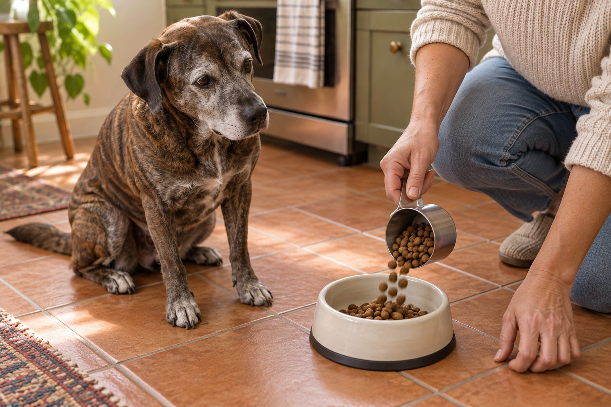

Many adult dogs do well with two measured meals daily, though individual health needs may call for a different plan.
An adult dog's feeding schedule should be easy to maintain and allow you to notice changes in appetite. The right total amount depends on the dog's size, activity, food, treats, and body condition.
Build a reliable routine
Two meals spaced through the day suit many adult dogs. Choose times your household can keep reasonably consistent, and provide a calm place to eat. Ask your veterinarian whether a different schedule is better for your dog.
Measure the recommended daily food amount and divide it between meals. Package guidance is a starting point; reassess based on weight and body condition.
Many adult dogs do well with two measured meals each day, but the best schedule fits the dog's health, appetite, and household. Start with the total daily amount recommended for the food, then review body condition and weight with your veterinarian. Divide that total into portions rather than filling a bowl by eye. Keep meal times predictable enough that you can notice a missed meal. A dog that suddenly refuses a normally welcome meal may be showing an early health change, even if it still wants treats.
If several people feed the dog, use a written plan with the food name, portion, and times. Mark each meal when it is served. This prevents accidental double feeding, especially during busy mornings or weekends. The plan should include who handles treats and training rewards, not just breakfast and dinner.
Count treats and extras
Training rewards, food puzzles, and table scraps add calories. Keep treats modest and adjust the main diet with professional guidance when needed. Sudden appetite changes may be a clue to illness rather than a training issue.
If your dog skips food unexpectedly, vomits, or seems unwell, call your veterinarian. Do not assume the next meal will solve it.
Treat calories can quietly change the daily total. Chews, table scraps, pill pockets, and training rewards all count. Set aside part of the day's allowance for training if that works for your dog and food. When a special reward is needed, account for it rather than adding it on top of every meal. A small dog can be affected by extras that look trivial to a person. A kitchen scale may be more consistent than a large scoop for dry food.
Review the dog's body condition every few weeks and discuss a steady gain or loss with the veterinarian. Do not respond to a hungry look by continually increasing food without checking the trend. Some dogs beg because they have learned the routine; others may have a medical reason for a new appetite change. Keep notes on both what is offered and what is actually eaten.

Account for life stage and health
Puppies need a different schedule and food. Seniors and dogs with diabetes, digestive conditions, or medication tied to meals may need an individualized plan. Follow the veterinarian's directions for those situations.
Dogs that eat too quickly may benefit from a suitable slow feeder, but recurring vomiting or discomfort warrants medical advice.
Life stage and medical history change feeding needs. A newly adopted adult, a pregnant dog, an older dog, and a dog on a prescription diet may need different plans. Exercise changes may also affect the amount, but they do not automatically require a new meal frequency. Ask your veterinarian before changing a therapeutic diet or skipping a meal because of an unrelated online rule. A dog with a condition that requires timed food or medication needs instructions specific to that treatment.
If appetite suddenly increases, falls, or becomes erratic, note any vomiting, diarrhea, weight change, thirst, or behavior change. Bring that pattern to the clinic. A feeding guide on a bag is a starting estimate, not a promise that the same portion suits every dog. Individual adjustment depends on the whole animal and the results over time.
Example of a measurable feeding day
- Before mealsMeasure the veterinarian-approved daily amount into one container.
- Each planned mealServe the agreed portion and mark who fed the dog.
- Training and bedtime reviewUse planned rewards from the allowance and record unusual appetite.
This is a tracking example, not a universal meal time or portion.
Keep food safe
Change diets gradually, store food as the label recommends, and wash bowls regularly. If you free-feed, measure what goes in and what remains so appetite and portions are still visible.
Food safety matters when meals are scheduled. Store the product according to its label and keep the original packaging or lot information in case of a recall. Wash bowls regularly and remove uneaten perishable food promptly. If you use wet food, refrigerate opened portions as directed. Keep a dog from accessing another pet's food or a full storage bag. An accidental binge is a health concern, not just a scheduling error, so call the veterinarian if the dog eats a large unexpected quantity or a food meant for another animal.
Travel and shift work can disrupt meal timing. Change the routine gradually when possible and give another caregiver exact written amounts. A one-time delay may be manageable for some healthy adults, but do not generalize that to dogs with medical needs. Clarify the plan before the schedule changes.
Practical details
Why two meals are a useful starting point
Many adult dogs can follow a morning and evening meal routine. It makes appetite changes easier to notice and divides the daily amount into manageable servings. That does not mean every dog must eat at exactly the same minute or that two meals are medically right for every pet. A dog with diabetes, a digestive condition, or medication linked to food needs an individual plan from a veterinarian.
Choose a quiet place where the dog can eat without being rushed by other animals. In a multi-dog home, separate bowls may prevent competition. Remove unfinished food according to the product's storage instructions, particularly for moist foods. A steady routine helps both the household and the dog.
Set up a usable feeding routine
- Choose meal times Many adult dogs do well with two meals; choose times the household can maintain.
- Measure the daily total Divide the food allowance between meals rather than filling a bowl by eye.
- Count extras Training treats, chews, and food puzzles belong in the day's calorie plan.
- Review the dog Watch body condition, energy, stool, and appetite and adjust with veterinary advice.
Measure the total before dividing it
The feeding chart on a package is a starting estimate. A dog's ideal amount depends on body condition, exercise, treats, and the energy density of the specific food. Use a measuring cup consistently or a kitchen scale if your veterinarian recommends it. Then divide the chosen daily amount across meals. An extra scoop each time can add up without being obvious.
Record treats and chews for a few days if weight is changing. Tiny training rewards count, even when they feel insignificant one at a time. Ask your veterinarian to review portions rather than sharply cutting food on your own, especially for a dog with a health condition.
A sample day illustrates the arithmetic without creating a universal rule. Suppose a veterinarian-approved daily portion is divided into two meals. If some of that day's food is used for training, remove it from the premeasured container rather than scooping extra from a separate bag. At the end of the day, you can see exactly how much was offered. This method works whether meals are morning and evening or fit another consistent household routine.
Some dogs eat too quickly or guard food. A slow feeder or calm separate space may help, but do not assume a gadget alone solves distress. Feed pets separately if one steals from another or if competition makes meals tense. Watch whether the dog finishes, leaves food, or vomits after eating. Those observations may change the feeding plan more than the clock time does.
Adapt as life changes
Puppies, pregnant or nursing dogs, and many seniors have different needs. Activity may drop during injury recovery or rise during a new walking routine. Reassess body condition and weight over time. A dog suddenly refusing food, vomiting, or behaving unusually needs veterinary advice; moving the meal time is not a reliable solution.
Free feeding works in some homes, but it can make intake harder to measure and appetite changes easier to miss. If you use it, put out a measured amount and note what remains. For a dog that gulps food, a suitable slow feeder may help, but recurring discomfort or vomiting should be discussed with a veterinarian.
Reassess the plan when the dog's weight, activity, medication, or food changes. Write down the product's calories and your measured portion if the veterinary team asks for them. If transitioning to a new food, follow a gradual plan and monitor stool and appetite. Do not abruptly switch foods simply because a dog seems bored. Regular review is especially useful after neutering, illness, or a change in exercise, when the old portion may no longer fit.
The goal is not an impressive schedule on paper. It is a routine that delivers an appropriate daily amount, lets caregivers notice changes, and keeps food safe. Two meals are a common starting point, but individual dogs may need a different plan. Make decisions with the veterinarian when health, growth, or medication complicates the picture.
A shared feeding chart can solve common household errors. Record the food product, the veterinarian-approved daily amount, the portion for each meal, and who served it. Include the planned treat allowance and any medication that must be given with food. Keep the chart simple enough to use on weekends and when a sitter visits. If the dog leaves food, note how much rather than automatically compensating with snacks. A persistent appetite change deserves veterinary discussion.
Recheck the plan when body condition changes. The package guide is a starting point, while the dog's actual weight trend and health tell you whether it fits. A dog that becomes less active after an injury may need a revised plan; a dog with a medical condition may need very specific timing. Ask the veterinary team before making large changes. A good schedule is measurable, consistent, and easy for every caregiver to follow without accidentally adding extra meals.
Build a schedule you can actually measure
Choose feeding times that fit your household, then divide the dog's daily food allowance into measured portions. Check the food label as a starting point, but adjust with veterinary guidance for body condition, age, activity, and medical needs. Use the same scoop or a kitchen scale consistently. If several people feed the dog, write down who gave each meal and treat so extra portions do not go unnoticed.
A predictable schedule helps you see when appetite changes. Pick up uneaten food according to the product's storage guidance and record a refusal that is unusual for your dog. Keep water available. If you use food for training, take those rewards from the planned daily amount where practical. Sudden hunger, weight change, or repeated missed meals deserves a conversation with a veterinarian rather than an automatic increase or decrease.
Some dogs do well with two meals; individual needs can differ. Avoid hard rules based only on breed or size, and do not make a large diet change overnight. Recheck body condition every few weeks. You should be able to discuss the dog's weight trend and how much food is actually eaten, not just how much is poured into the bowl.
When travel or work changes the schedule, shift meals gradually if possible and keep the daily total stable. A simple written routine makes it easier for another caregiver to feed the dog correctly.
If the dog eats too quickly, ask about safe slow-feeding options and supervise their use. A feeding routine should also allow a calm place away from other pets. Competition around bowls can change how much each dog actually eats, even when portions were measured correctly.
Continue exploring
For a broader routine, read Can Dogs Eat Bananas? What Pet Owners Should Know, Can Cats Eat Cooked Chicken?, and How to Read a Pet Food Label Without the Hype.
Frequently Asked Questions
Is one meal a day enough?
Some dogs may do well, but many benefit from two meals. Discuss your dog's needs with a veterinarian.
Should meals be at the same time each day?
A consistent routine helps, though small variation is generally manageable for healthy dogs.
What if my dog is always hungry?
Review portions, treats, weight, and health with a veterinarian if hunger seems excessive.
Editorial references
These resources informed the general guidance in this article. They do not replace advice tailored to your pet.
This guide offers general information. Your pet’s age, health, and history may call for a different plan. For medical concerns, ask your veterinarian.